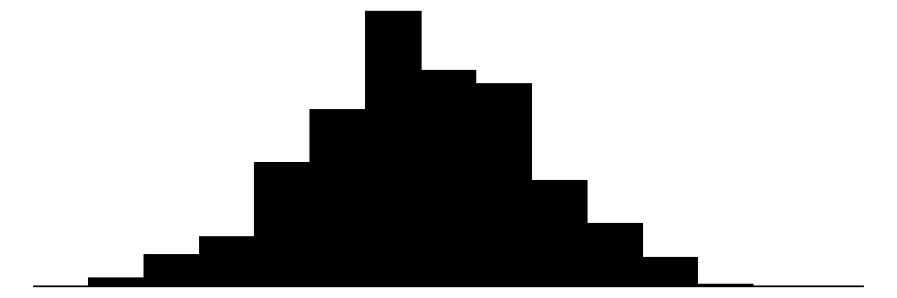
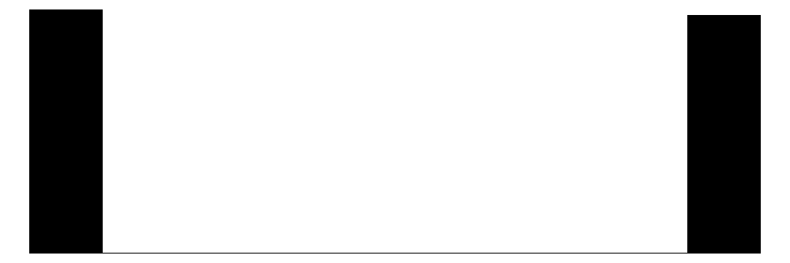

フィッシャーのp値
参照：因果推論の計量経済学（川口、澤田）：第2章 無作為化実験
定数とパラメータの設定
Code
set.seed(1)
N <- 1000 #個体数
R <- 1000 #モンテカルロのドロー数
N_1 <- 500 #処置群のサイズ
tau_population <- 0.2 #母集団における平均処置効果
データの生成
Code
outcome_potential <-
tibble::tibble(
y_0 = rnorm(N, mean = 0, sd = 1),
y_1 = rnorm(N, mean = tau_population, sd = 1)
)
tau <- outcome_potential |>
dplyr::summarise(
tau = mean(y_1 - y_0)
) |>
dplyr::pull(tau)
outcome_potential |>
head() |>
kableExtra::kbl() |>
kableExtra::kable_styling()
| -0.6264538 |
1.3349651 |
| 0.1836433 |
1.3119318 |
| -0.8356286 |
-0.6707776 |
| 1.5952808 |
0.4107316 |
| 0.3295078 |
0.2693956 |
| -0.8204684 |
-1.4626489 |
Code
outcome_potential |>
modelsummary::datasummary_skim()
| |
Unique |
Missing Pct. |
Mean |
SD |
Min |
Median |
Max |
Histogram |
| y_0 |
1000 |
0 |
0.0 |
1.0 |
-3.0 |
0.0 |
3.8 |
 |
| y_1 |
1000 |
0 |
0.2 |
1.0 |
-3.1 |
0.2 |
3.8 |
 |
Code
Code
# 観測データ（顕在結果）の生成
data_realized <-
generate_data_randomized(
outcome_potential = outcome_potential,
N_1 = N_1,
seed = 1
)
data_realized |>
head() |>
kbl() |>
kable_styling()
| 1 |
1.3349651 |
| 0 |
0.1836433 |
| 1 |
-0.6707776 |
| 0 |
1.5952808 |
| 1 |
0.2693956 |
| 0 |
-0.8204684 |
Code
data_realized |>
modelsummary::datasummary_skim()
| |
Unique |
Missing Pct. |
Mean |
SD |
Min |
Median |
Max |
Histogram |
| z |
2 |
0 |
0.5 |
0.5 |
0.0 |
0.5 |
1.0 |
 |
| y |
1000 |
0 |
0.1 |
1.0 |
-3.1 |
0.1 |
3.8 |
 |
分析と推定
Code
t <-
calculate_difference_in_means(
data_realized = data_realized
)
t
Code
outcome_potential_null <-
data_realized |>
dplyr::mutate(
y_0 = y,
y_1 = y
)
t_distribution <-
1:R %>%
purrr::map(
.,
~ generate_data_randomized(
outcome_potential = outcome_potential_null,
N_1 = N_1,
seed = .
) |>
calculate_difference_in_means()
) |>
purrr::reduce(c) #purrr::reduce(c)でリストを1つのベクトルに統合
pvalue <-
mean(abs(t_distribution) > abs(t))
format(pvalue, nsmall = 4)
tau = 0の帰無仮説の元で、tau（平均値の差）の実現値が発生する確率は 1%であり、1%有意水準で帰無仮説は棄却される。 また、tauの絶対値の分布は以下のようになる。
Code
ggplot(tibble::tibble(t_distribution)) +
geom_line(aes(x = abs(t_distribution)),
stat = "density")